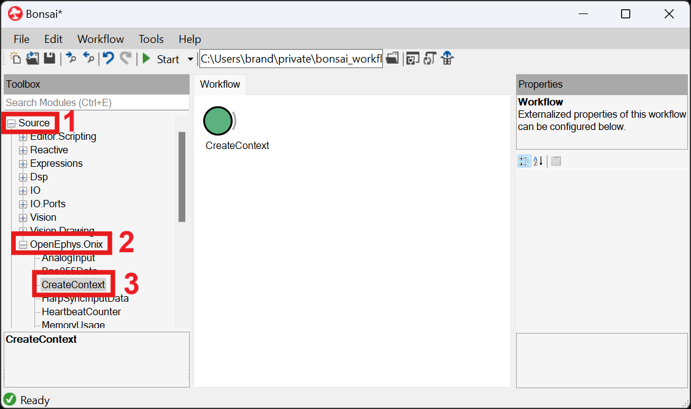
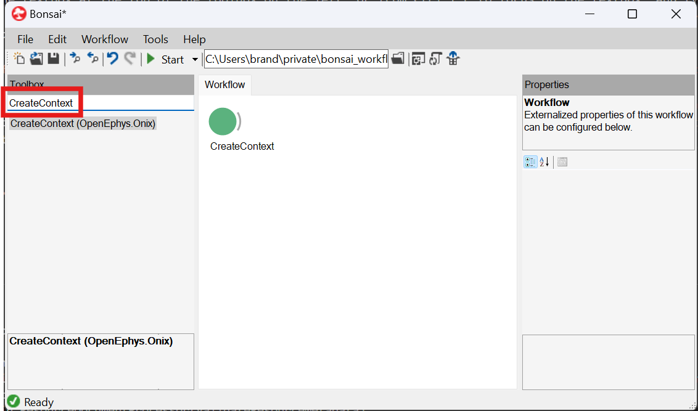

Initialize the ONI Context
The CreateContext operator initializes the acquisition context, and it should be the first operator you add to your workflow as it provides access to the hardware device table for all other configuration operators. There are several different ways to find this operator and add it to the workflow:
From the Bonsai editor, navigate to the toolbox on the left side of the screen and expand the Source section. Next, expand the OpenEphys.Onix1 section, and find the
CreateContextline. The operator can then be added by either double-clicking it, or dragging and dropping the operator into the workflow.
Click on the textbox at the top of the toolbox on the left, or from Ctrl + E to focus on the textbox, and type
CreateContextto search for the operator. Same as (1), the operator can be placed by double-clicking or dragging and dropping; additionally, if theCreateContextstring is highlighted Enter can be pressed to place the operator immediately.
Hover over the image of the
CreateContextworkflow below, and click on the clipboard icon in the top-right corner of the workflow image to copy the workflow to the clipboard. Navigate back to Bonsai, and paste the copied workflow into the active editor. Pasting can be done via Ctrl + V, or right-clicking in the editor and choosing Paste.
CreateContext Workflow
This is a nominally functional workflow that provides access to the ONI context, from which all operators can then be linked to and configured, while also demonstrating how a Breakout Board can be configured before finishing the configuration chain by placing a StartAcquisition operator: